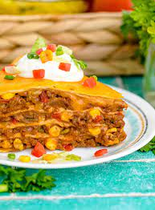

Taco baked pie

Taco tico teco pies
I've personally never had this in my life,
but if you do try it,
i hope you enjoy it.
Ingredients
-
1 pound ground beef
-
1 (1 ounce) package taco seasoning mix
-
1 cup salsa
-
½ (15 ounce) can black beans, rinsed and drained (Optional)
-
1 (8.5 ounce) package corn bread mix (such as Jiffy®)
-
⅓ cup milk
-
1 egg
-
1 tablespoon honey
-
1 tablespoon corn oil
-
½ cup corn (Optional)
-
1 cup shredded Cheddar cheese
-
1 cup corn chips, partially crushed
Steps
-
Cook and stir ground beef in a skillet over medium heat until brown and crumbled,
7 to 10 minutes; drain grease. Add taco seasoning; mix well.
Stir in salsa and black beans; remove from heat.
-
Grease a 9-inch pie pan or casserole dish.
-
Mix corn bread mix, milk, egg, honey, and corn oil together in a bowl until
batter is smooth; stir in corn.
Pour batter into pie pan. Layer ground beef mixture over batter; sprinkle with Cheddar cheese. Top with corn chips
-
Place in a cold oven; set temperature to 350 degrees F (175 degrees C).
Bake until sides are golden brown, 30 to 35 minutes.